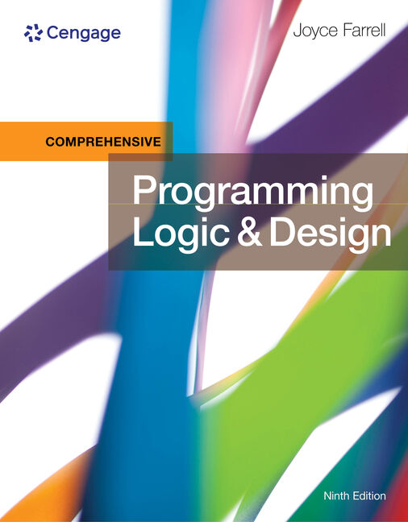
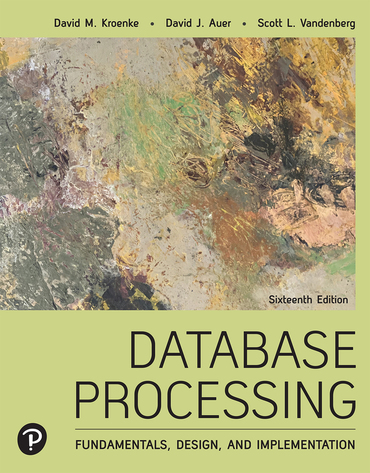

MAT8001C_060 Tech Math for Computer Science (Level 1)
Students manipulate algebraic expressions, solve algebraic equations and linear systems.
CST8300 Achieving Success In Changing Environments (Level 1)
Students explore possibilities, assess aptitudes, apply critical thinking, and resolve complex societal issues in the modern workplace.
ENL1813T_016 Communications (Level 1)
Students practice writing, speaking, reading, listening, researching, and using technology for professional communication.

CST8116_314 Intro to Computer Programming (Level 1)
Students develop introductory knowledge of computer programming with emphasis on problem analysis and design.
CST8215 Introduction to Database (Level 1)
Students learn the fundamentals of relational databases design using Entity Relation Diagrams and use Structured Query Language.
CST2355 All Sections Database Systems (Level 2)
Students learn database design techniques using both the Entity Relationship model as well as an object oriented approach to designing database systems.
GED6022_360 A Sense of Humour (Level 2)
Humour is a universal tool of communication and social influence. Students survey the development, use, and value of humour in Canadian visual and creative arts.
GEP1001_313 Cooperative Education Readiness Computer Programming (Level 2)
Cooperative education (Co-op) allows students to integrate their classroom learning with a real-world experience though paid work terms.
ENL2019T_306 Technical Comm. for Eng. Technology (Level 2)
Students practise writing, speaking, reading, listening, locating and documenting information, and using technology to communicate professionally.
CST8285_311 Web Programming (Level 2)
Internet technologies, full stack web development, and the analysis, design and implementation of internet applications.
CST8284_311 Object Oriented Programming (Java) (Level 2)
Students explore object-oriented programming methodology using the Java programming language.
CST8102_320_321_322_323 Operating Systems Fund (GNU/Linux) (Level 2)
Students explore the basic concepts and components of Operating Systems (OS), and how they function and interact with hardware and software components.